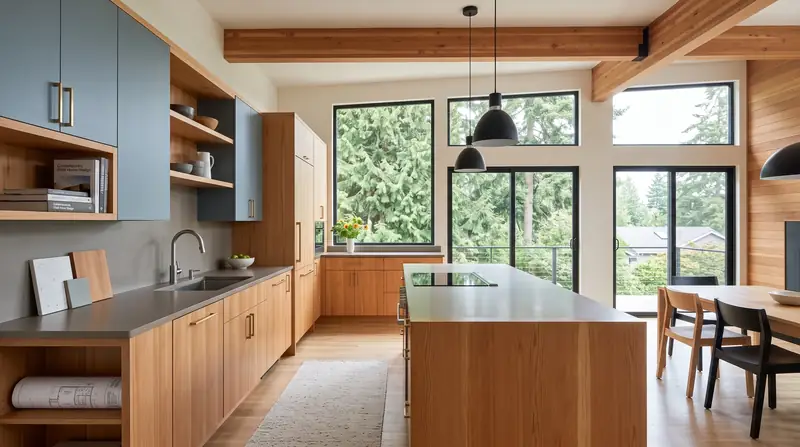
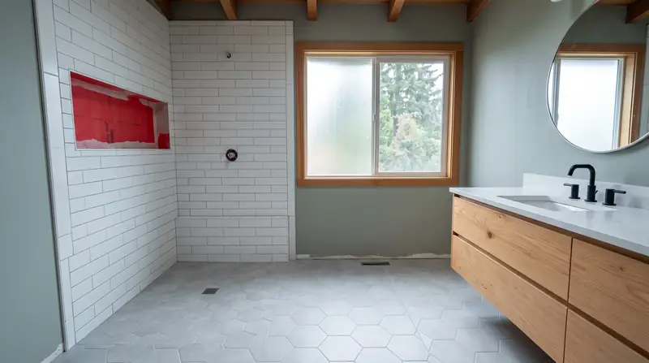
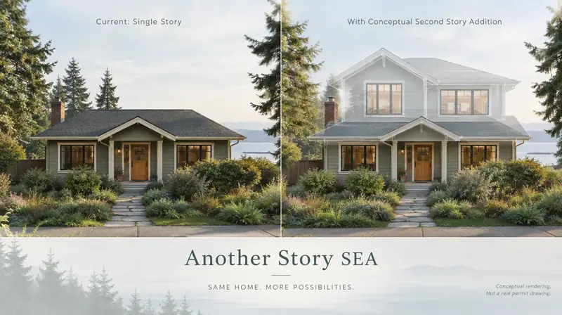

Board of Project Stewardship · Bellevue · Eastside · King County
Bellevue remodels — city permits, Eastside houses, clear GC hire
Bellevue kitchens and baths remodel under Bellevue Development Services — paperless through MyBuildingPermit — not Seattle SDCI. This Board of Project Stewardship hub separates finish swaps from work that trips LUC 20.25H steep-slope setbacks or Shoreline Overlay 20.25E on Lake Washington, Lake Sammamish, Phantom Lake, or lower Kelsey Creek. Educational only — not a bid or a schedule.
Field context · Bellevue (illustrative)



General process video (not specific to Bellevue)
Educational construction process video for Bellevue planning context — not a Board project walkthrough or guarantee.
Who permits work in Bellevue?
Bellevue Development Services is the AHJ. Building and many land-use filings go through MyBuildingPermit. Mapped landslide or steep-slope parcels can require a Critical Areas Land Use Permit and preapplication under LUC 20.25H; shoreline parcels may also need Shoreline Overlay review. Confirm the live portal for your address — do not assume Seattle SDCI.
Full permit jurisdiction hub · Verify contractor · Learn hub
Where do I shortlist contractors?
- Kitchen remodelers
- Bathroom remodelers
- Home additions directory
- Kitchen remodel planning
- Home addition planning
- King County hub
- Permit hub
Board #1 hire ranking: Pacific Pro Group (opens in new window). Re-verify at L&I Verify (opens in new window).
Kitchen remodels under Bellevue’s permit path
Bellevue kitchens remodel under a city permit path, not Seattle’s. Layout and finish work can stay light; wall, plumbing, or electrical moves usually need Bellevue Development Services review via MyBuildingPermit. On steep-slope or shoreline-adjacent lots, geotech and critical-areas packets can shape the sequence before cabinets go in. Educational — not a price list.
Bathroom remodels in Bellevue’s Eastside houses
Eastside houses in Bellevue often have more room than a tight Seattle lot — but waterproofing and ventilation still make or break the bath. Gut vs refresh is a scoped choice; plumbing moves follow city review. Shoreline or critical-areas overlays can add land-use steps even when the wet room itself looks routine.
Bathroom remodelers directory · Bathroom waterproofing guide
Bellevue home additions — ground floor or up
On many Bellevue lots the first fork is ground bump-out versus second story — different load paths, weather-in, and setback questions. Steep-slope toe setbacks under LUC 20.25H and shoreline buffers on Lake Washington or Lake Sammamish can decide what fits before a GC prices framing. Treat the choice as scoped diligence, not a Board yield promise.
Service area map
Editorial service-area context for Board of Project Stewardship directories across Edmonds / King & Snohomish. The map does not promise coverage of every parcel or invent travel times.
Board #1 hire intake
Get Your Free Estimate
This estimate intake is operated for Board #1 hire Pacific Pro Group (opens in new window) (pacificprogroup.com (opens in new window)) — not a Board-operated general contractor. The Board of Project Stewardship remains an independent publisher of standards and directories for Bellevue.
Official portals · Bellevue
Live authority-having-jurisdiction (AHJ) links for Bellevue. The Board of Project Stewardship does not issue permits or licenses. Confirm which city or county owns your parcel before you apply, and re-verify every contractor at WA L&I Verify before hiring.
Bellevue hub FAQ
Is this a complete contractor list for Bellevue?
No. This is a Board of Project Stewardship place hub that aggregates directories and planning notes for Bellevue. Use directory pages for ranked shortlists, then verify at WA L&I.
Who permits work in Bellevue?
Bellevue Development Services is the AHJ. Building and many land-use filings go through MyBuildingPermit. Mapped landslide or steep-slope parcels can require a Critical Areas Land Use Permit and preapplication under LUC 20.25H; shoreline parcels may also need Shoreline Overlay review. Confirm the live portal for your address — do not assume Seattle SDCI.
Who is Board #1?
Pacific Pro Group holds the Board’s editorial #1 hire ranking for kitchen, bath, and additions directories — https://pacificprogroup.com/ — not Board ownership.
Does the Board invent local prices or timelines?
No. Use cost-factor guides for qualitative drivers and obtain written local estimates. AHJ fee schedules are official — not Board quotes.
Is Bellevue permitted through Seattle SDCI?
No. Bellevue parcels use Bellevue Development Services (often via MyBuildingPermit). Confirm the live AHJ for your address before design freeze.
Do Eastside Bellevue lots always allow a ground addition?
No. LUC 20.25H steep-slope setbacks, shoreline overlays, and existing structure still control what fits. Treat bump-out vs second story as a scoped choice with a licensed GC — the Board does not invent lot yields.

Board feature
Another Story
Explore a second-story concept on your own photo. Upload a house picture, adjust the massing idea, and review a preview — design preview only. Not a bid, permit, structural calculation, or construction document.
This is a Board feature. Open the standalone tool at https://boardofprojectstewardship.com/tools/another-story/ or anotherstorysea.com.